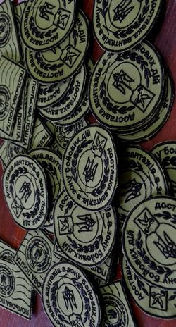
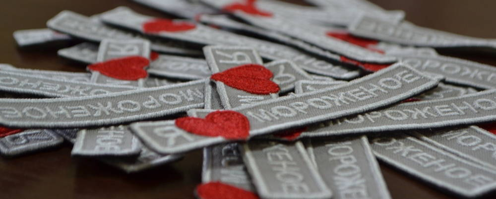

Заказать шевроны: изготовление нашивок на на одежду и не только
Услуги, которые оказывает Центр машинной вышивки:- Изготовление шевронов на заказ
- Изготовление нашивок на заказ
- Изготовление нашивок от 1 штуки
- Также вы можете заказать нашивки | шевроны срочно. Срок исполнения от 1 дня.
- Работаем по всей Украине
Как заказать изготовление шевронов и нашивок в Киеве
Процесс заказа нашивок в Центре машинной вышивки выглядит следующим образом:
- Для начала Вам неоходимо связаться с нами с помощью электронной почты или с помощью телефона. При обращении через e-mail прикрепите:
- Изображение будующей нашивки
- Размеры шеврона или нашивки
- Общий тираж, в котором необходимо вышить
- Шеврон должен быть на липучке или нет.
- Изготовления программы-дизайна шеврона для вышивальной машины, с помощью которого и производится изготовление нашивки. Для изготовления дизайна нам от Вас необходим исходник: изображение, фотография в хорошем качестве или векторный макет. Векторный макет намного препочтительней.
- После утверждения макета будущей вышивки, окончательного утверждения сроков, к которым работа должна быть завершена и прочих нюансов, заказ отправляется в исполнение.
- После завершения вышивки мы связываемся с вами по телефону или через электронную почту. Все что Вам остается - это приехать и забрать Ваши шевроны или нашивки. В случае, если Вы очень заняты и у Вас не получается к нам доехать, мы можем отправить ваш заказ Новой Почтой.
Вы готовы заказать шевроны в городе Киев?

Ознакомьтесь с преимуществом машинной вышивки шевронов перед другими техниками их изготовления:- Внешний вид. Переплетения ниток, которые образуют единый рисунок, называемый нашивками на одежду – заказать или нет, вопрос даже не поднимается. Именно так. Вышитый шеврон - это красиво.
- Вы свободны в своей фантазии. Хотите заказать нашивку на кимоно, байкерскую нашивку, мото нашивку или нашивку на спину? Без проблем
- Популярность. Заказать нашивки Киев и Шевроны на заказ - довольно популярный запрос в поисковике. Если люди это ищут, значит это актуально и популярно.
- Долговечность. Когда вы решите что заказать шевроны - это то, что Вам нужно, то вы сами убедитесь в их долговечности. Нитки не выцветают на солнце, не трескаются и не расползаются. Постирать шеврон в стиральной машине? - Без проблем. Большие перепады температур? - Легко.
- Мобильность. Шеврон или нашивку Вы можете с легкостью приклеить или пришить куда угодно. Если заказывать вышивку на одежде, то такое удовольствие, к сожалению, недоступно.

